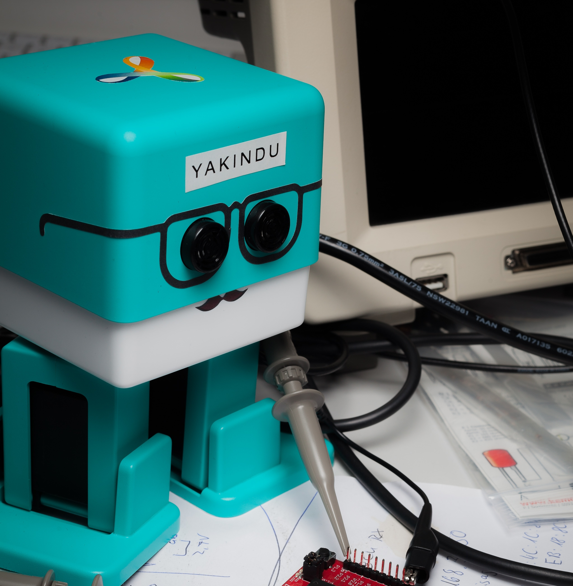
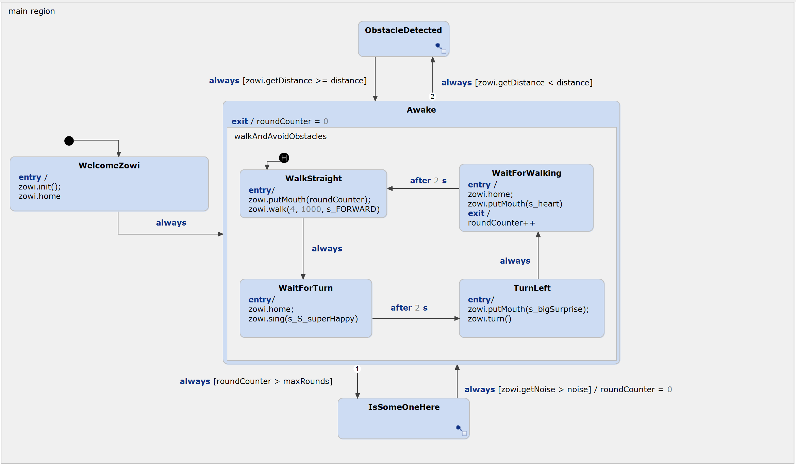

Zowi (C++)
This is a example of how to use the Default Domain together with the Zowi by BQ, which is based on an Arduino Uno. C++ Timers are integrated.

The statechart contains four states. Firstly, the Zowi will be initialized. After this, Zowi is awake and tries to walk a circle. If maximum amount of rounds is reached he will wait for some noise. If something is in his way he will detect it and stop walking. The underlying statechart looks like the following:

Addons for compiling and flashing
All Arduino examples can be compiled via command line or be imported into the Arduino IDE. An easier way is using the Sloeber plugin , which allows you to compile and upload the code directly in Statechart Tools.
How to install the Sloeber plugin
There are two ways of how to install the plugin. The easiest way is using our example wizard, which allows you installing required plugins. Just follow the built-in instructions.
Another way is installing the plugin manually. You need to follow these steps:
- Click on 'Help' -> 'Install New Software..' -> 'Add...'.
- Define a name and add 'http://eclipse.baeyens.it/update/V4/stable' as location.
- Choose the plugin - not the IDE.
- Follow the instructions
- The installation dialog will ask you for a restart. After this restart is done, the installition it will download some files. Just wait until it's finished
Configure the Sloeber plugin
After the installation you should notice a new Toolbar, which allows you to compile and flash your Arduino.
Initially, the projects are not configured, as you may require to add the toolchain:
- Click on Window -> Preferences
- Open the Arduino window -> Platforms and Boards
- Depending on your Arduino, choose the board. For the UNO click on arduino -> Arduino AVR -> check out one toolchain
- Click on Apply and Close and wait until the downlaod has been finished
Some examples may need different libraries. E.g. the LiquidCrystal lib. If so, repeat the steps using the Library Manager and add your required lib.
Configure the example
Once you have installed the toolchain for your Arduino, you can configure the project.
- Right click the project and open the Preference page
- Open the Arduino window
- Choose your platform and port
There will be a dialog, which warns you that the platform.txt is missing. This is not a problem and will be resolved after the intitial configuration.
Compile and upload
Finally, you can use the green toolbar for compiling and flashing the Arduino. Have fun!
Required libraries
- Servo
- EEPROM